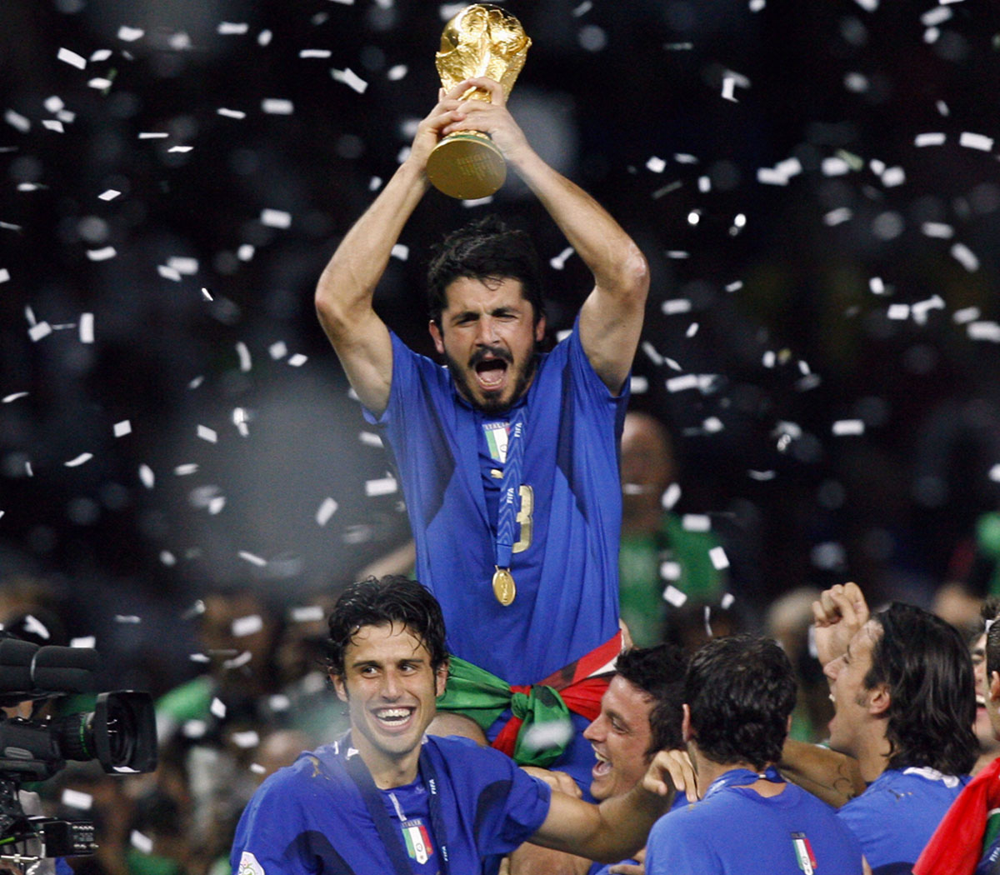
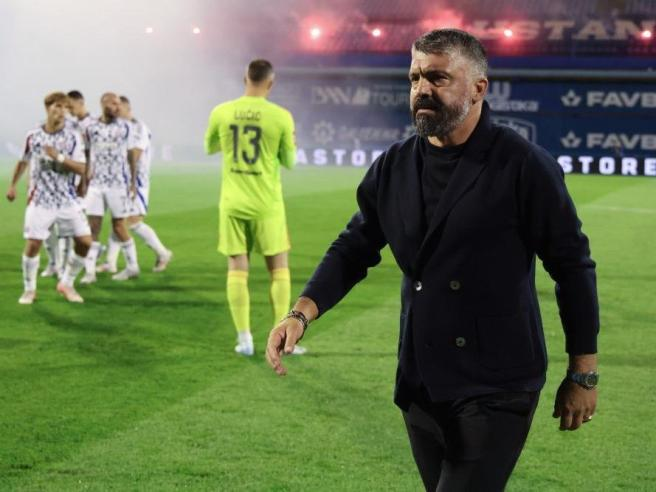
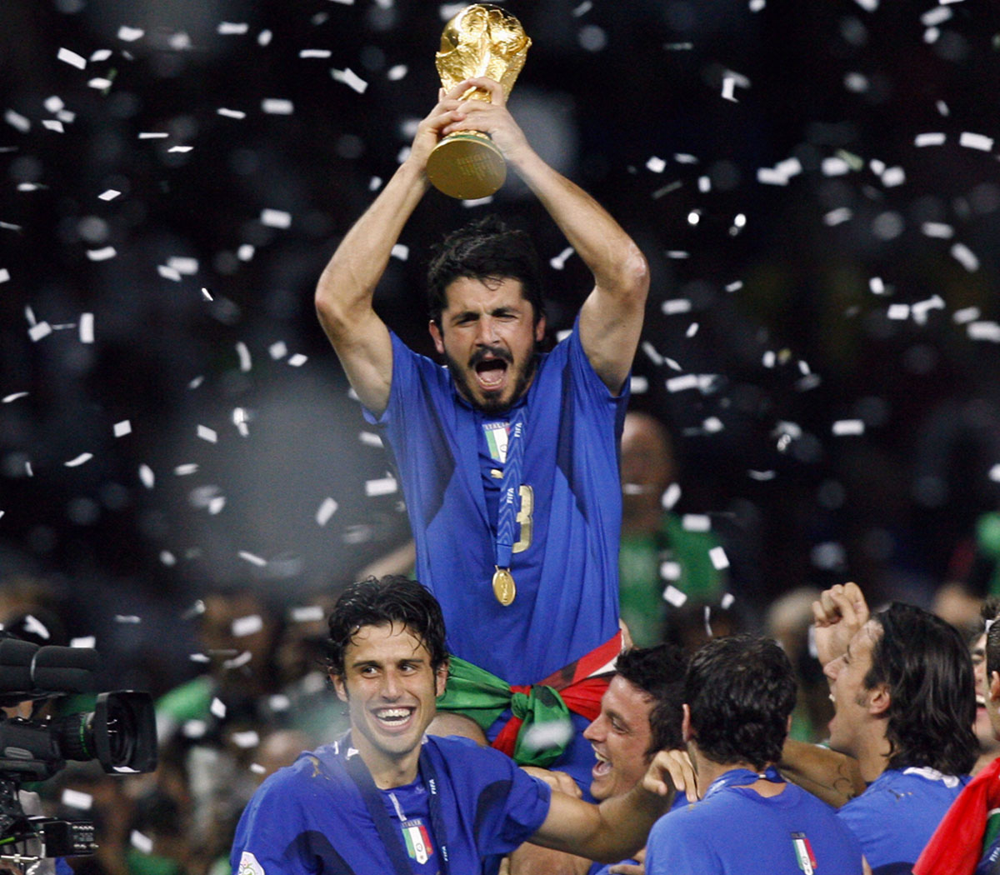
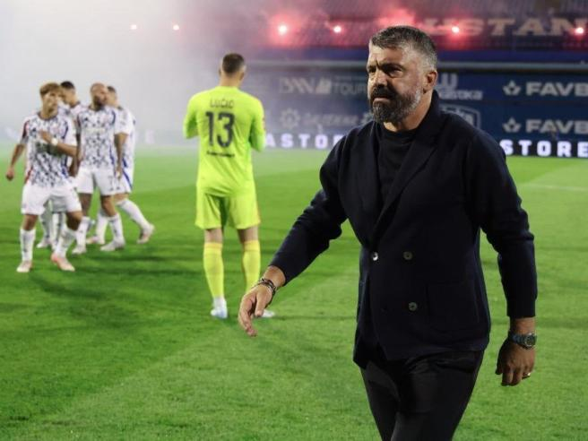

Nato il 9 gennaio 1978, Rino Gattuso è un allenatore di calcio ed ex calciatore italiano, di ruolo centrocampista. Famoso per i suoi ruoli al Milan e la nazionale italiana.
Carriera da calciatore:
Perugia → Rangers → Salernitana → Milan → Sion
Carriera da allenatore:
Sion → Palermo → OFI Creta → Pisa → Milan → Napoli → Valencia → Olympique Marsiglia → Hajduk Spalato
Coppa Italia x1
Campionato italiano x2
Supercoppa italiana x2
UEFA Champions League x2
Supercoppa UEFA x2
Coppa del mondo per club x1
Campionato mondiale x1
Coppa Italia x1
 


